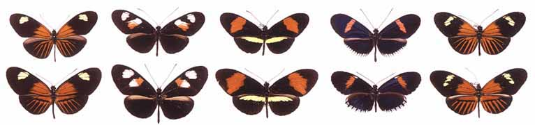

Heliconius erato
(above), and H. melpomene (below), a pair of Müllerian mimics
from different areas of Ecuador and Northern Peru. Within any area, the
two species are extremely accurate mimics of one another, but major geographic
differences in colour pattern have evolved within each species. This geographic
diversity is extraordinary by temperate zone standards: the area (about
600km x 300km) of the Andean foothills from which all these forms can be
found is less than the size of Britain.
© J. Mallet 1999